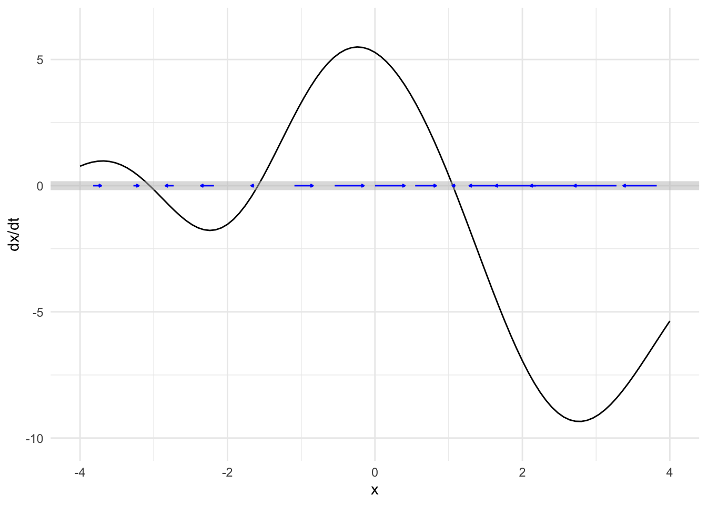
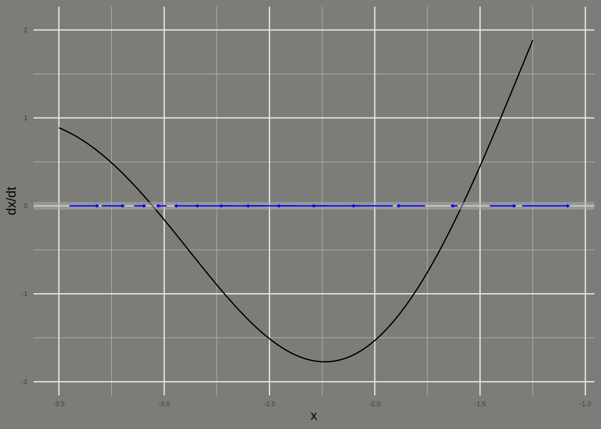
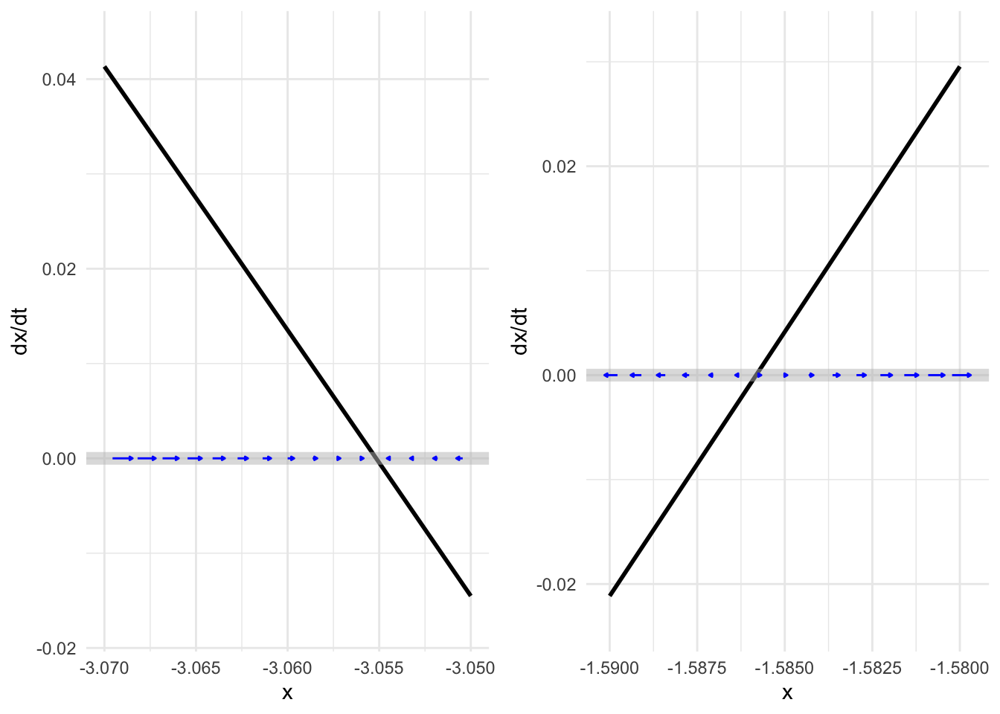
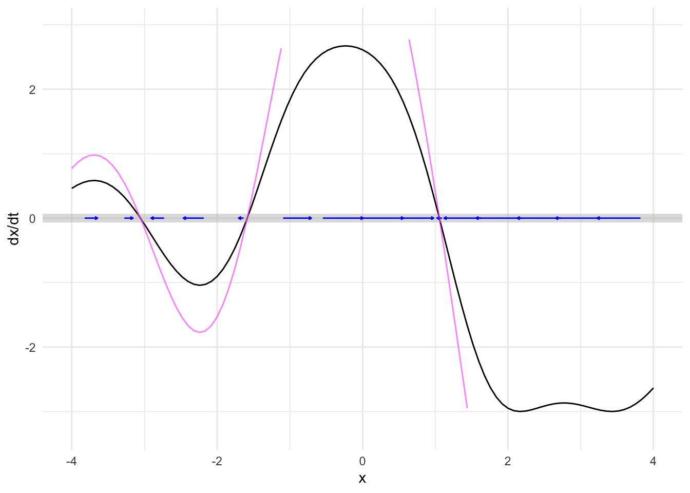
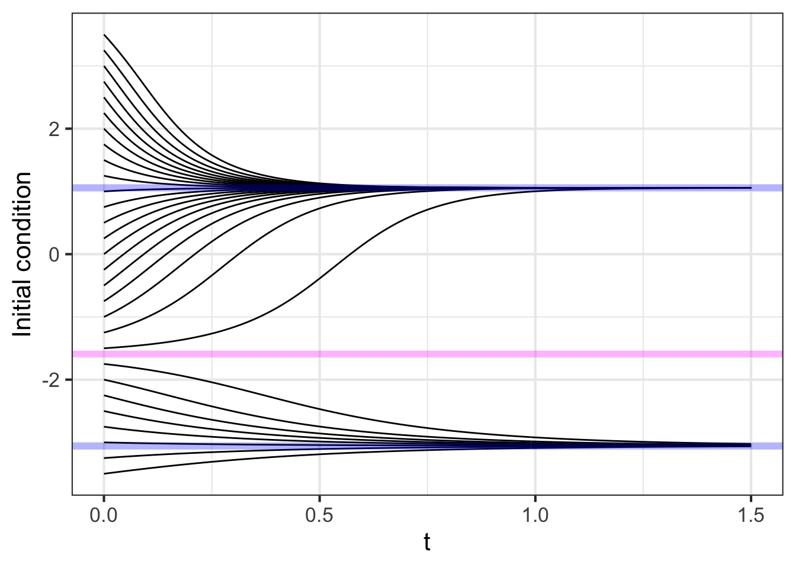
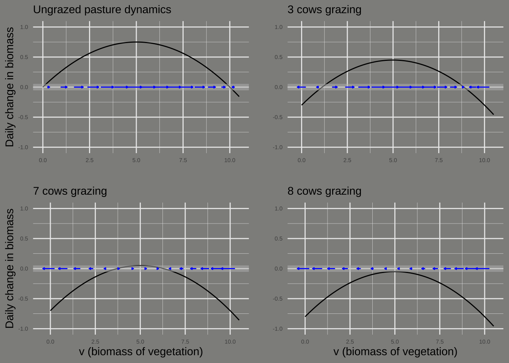
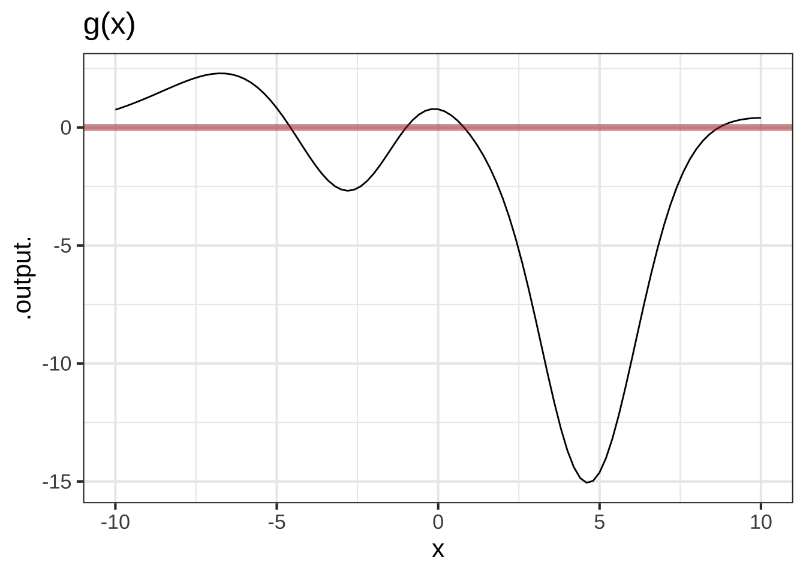
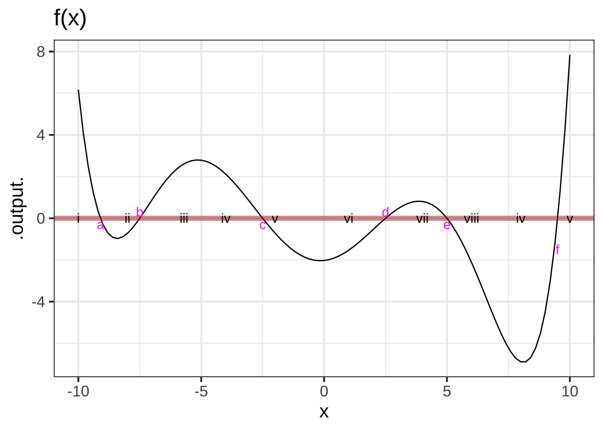
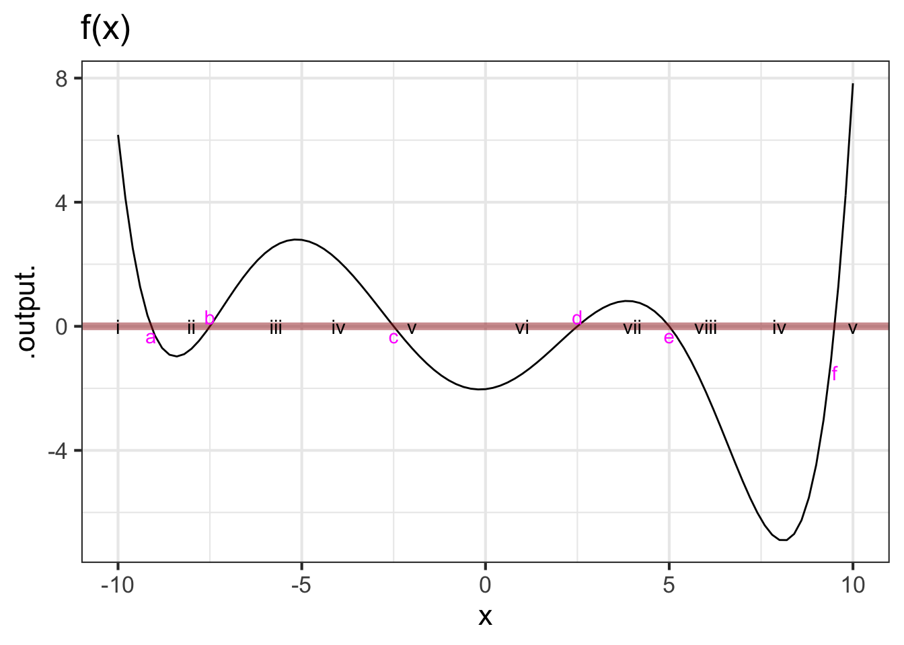

41 Flows on the line
The previous two chapters presented ideas relating to dynamical systems: state, state-space, dynamical function, flow, trajectory, “solution.” Now we turn to the some of the phenomena seen in dynamical systems, starting in the simplest way possible: dynamical systems with a single state variable. We will focus on fixed points and their stability, which can be understood qualitatively (although you need to distinguish between a positive and a negative slope). Then we will look at a technique we have encountered since Block 2: approximation of a function by a straight-line function. Such linear dynamics have a straightforward exponential “solution.”
Finally, we will look at an important example of how careful observation of fixed points and the way dynamics change when we modify a parameter in the dynamical functions provides an understanding of a ecological stability and instability and the consequences that result.
41.1 Dynamical function and flow
In the previous chapter, we saw how to draw a flow field in a two-dimensional state space, evaluating the dynamical functions and using the results to construct a vector. We cannot practically visualize both the flow and the shapes of the two dynamical functions in a single plot, which makes it harder to understand structures such as fixed points.
Happily, with a one-dimensional state space, we can easily show both the flow vectors and the single dynamical function at once.
For ease of reference, we will name the dynamical function for the rest of this section \(f(x)\), so that the differential equation is \[\partial_t x = f(x)\ .\]
The flow itself appears as the example in Figure 41.1. The state space is the number line and the flow vectors are, as usual arrows that point from place to place in the state space.

Because the state space can be drawn without using the vertical coordinate of the page, we can use that vertical coordinate to show something else: the dynamical function, as in Figure 41.2.

The correspondence between the dynamical function and the flow field is easy to see in such a presentation. Where the output of the dynamical is large and positive (say, near \(x=0\)), the flow is in the positive direction and relatively fast, as shown by a long, right-pointing flow vector. When the output of the dynamical function is negative (around \(x=3\), for instance) the flow is in the negative direction: a left pointing arrow.
Near a zero crossing of the dynamical function, the flow arrows are negligibly short: the state velocity is very slow. Indeed, at the zero crossings, the state velocity is exactly zero. Such zero crossings are called fixed points: since the state velocity is zero, the state never moves!
We can see the dynamics near fixed points more closely by zooming in, as in Figure 41.3 which shows two of the system’s fixed points.

Notice in Figure 41.3 that the flow is slower the nearer the state is to the fixed point, but it is only exactly zero at the fixed point.
A calculus technique you will be familiar with from previous Blocks is zooming in a region that we want to examine in detail.

The short pieces of the dynamical function shown in Figure 41.4, are, like short pieces of any continuous function: almost exactly straight lines. For the left fixed point, the dynamical function is \(f(x) \approx -2.804 (x + 3.055)\) while for the right it is \(f(x) \approx 5.065 (x + 1.586)\). In Section @ref(symbolic-solutions-ODE) we found symbolically the solutions for dynamical functions in this form. For \(x_0\approx-3.055\) the solution is \[x(t) \approx (x_0 + 3.055)e^{-2.804 t} - 3.055\ ,\] while for \(x_0\approx -1.586\) the solution is \[x(t) \approx (x_0 +1.586)\, e^{5.065 t} - 1.586\ .\] There is something fundamentally different about these two solutions. One of them is exponential decay toward the fixed point, while the other grows exponentially away from the fixed point. We call the dynamics near the fixed-point with exponential decay stable and the dynamics near fixed-point with exponential growth unstable.
Graphics such as Figure 41.2 let you see both the flow and the dynamical functions together in one place.
How about also showing trajectories? Unfortunately, the two-dimensional extent of a computer screen or a piece of paper make it hard to include still more information in an intelligible way. It would be nice to have a third dimension for the display.
Major Austin Davis developed such a display, using time as the third dimension. In the movie below, the state space is shown as a horizontal line, as before. The vertical axis shows the dynamical function as in Figure 41.2. The dynamical function is shown in another way: as the hue and intensity of color, which lets you focus on the activity in the state space. This activity is shown by the moving gray triangles. Each triangle is placed on the phase line to mark an initial condition, then moves right or left according to the dynamics.
41.2 Generic behavior
So long as two dynamical systems have similar fixed points with the same stability, their trajectories will be much the same. For example, our model dynamical function might be different in detail, as in Figure 41.5, and still produce the same behavior.

So long as two flows have similar fixed points with the same stability, their trajectories will be much the same. Consequently, studying the fixed points without worrying about the details of the dynamics gives a huge amount of information about the system.
For example, Figure 41.6 shows a score of different time series following the solutions from a score of initial conditions. The long-term behaviors for all the time series is similar: they converge to one or another of the stable fixed points.

It is worth pointing out a consequence of the mathematics of continuous functions: if a system with a continuous dynamical function has a region of state space with two different fixed points, there must be an unstable fixed point in between them.
41.3 Linearization
You can see in Figure 41.6 that many of the solutions approach their final, equilibrium value in an exponential manner. This is particularly true for the solutions with initial conditions very near the stable fixed points. All these solutions are characterized quantitatively by the parameter \(a\) in the exponential solution \(A e^{a t}\). (Remember, \(a < 0\) when there is exponential decay.)
Quantitative knowledge of \(a\) is helpful to understand the time scale of the exponential approach to stable fixed points. We can find a numerical value for \(a\) for each fixed point by constructing a linear approximation to the dynamical function near each of the fixed points.
The procedure involves the same principles as introduced in Block 2 for constructing low-order polynomial approximations to functions, but here “low-order” means “first order.”
The analysis is done separately for each of the fixed points, so the first step is to find the fixed points, the values \(x^\star\) such that \(f(x^\star) = 0\).
Recall from Block 2 the Taylor polynomial approximation to a function \(f(x)\) centered on a point \(x^\star\):
\[f(x) \approx f(x^\star) + \partial_x f(x^\star) \left[x - x^\star\right]\]
When \(x^\star\) is a fixed point, \(f(x^\star) = 0\) so the approximation is simply \(f(x) \approx \partial_x f(x^\star) \left[x - x^\star\right]\). Keep in mind that \(\partial_x f(x^\star)\) is the derivative function \(\partial_x f\) evaluated at the input \(x^\star\), so \(\partial_x f(x^star)\) is simply a quantity, not a function. Indeed, \(\partial_x f(x^star)\) is exactly the quantity \(a\) in the exponential solution \(e^{a t}\).
This process of constructing the linear approximation \(f(x) \approx a \left[x - x^\star\right]\) is called linearization.
Consider the first-order differential equation \[\partial_t x = f(x) \equiv r x (x - x/K)\] where \(r\) and \(K\) are parameters that are greater than zero. Linearizing the nonlinear function \(f(x)\) lets us figure out how fast or slow is the exponential growth or decay of the solutions for initial conditions near the fixed points.
There are two fixed points, one at \(x_1^\star = 0\) and the other at \(x_2^\star = K\). What is the exponential parameter \(a\) for each of the fixed points.
The derivative (with respect to \(x\)) \(\partial_x f(x)\) can be found with the product rule from Block 2. It is \[\partial_x f(x) = r\, (1 - x/K) - r\, x\, (1/K)\]
Evaluating \(\partial_x f(x)\) at the two fixed points \(x_1^\star = 0\) and \(x_2^\star = K\) gives
\[\partial_x f(x_1^\star) = r\ \ \ \text{and}\ \ \ \partial_x f(x_2^\star) = -r\]
Solutions near \(x_1^\star\) will grow exponentially as \(e^{r t}\), unstable since \(0 < r\). Solutions near \(x_2^\star\) will decay toward \(x_2^\star\) in an exponential manner as \(e^{-r t}\).
It is critical to distinguish carefully between \(x^\star\), which is the location of the fixed point being examined, and \(x_0\), which is the initial condition of the state, that is, \(x(t=0)\).
\(\ \)
Let’s return to the model of saving for retirement in Chapter Chapter 39:
\[\partial_t V = r\, V + M\ .\]
The state variable here is named \(V\). The dynamical function is \[g(V) = r\, V + M\] where \(r\) is the interest rate (say, 3% per year which is \(r=0.03\) per year) and \(M\) is the monthly contribution. To keep the units consistent, we set the units of \(t\) to be years, of \(r\) to be 1/years, of \(V\) to be dollars and of \(M\) to be dollars-per-year. So a monthly contribution of $1000 would come to \(M=12000\) dollars-per-year.
Find the amount \(V\) that will result from 30 years of savings with an initial condition \(V_0 = 0\).
Step i) Find the fixed point. This is a value \(V^\star\) such that
\[r\, V^\star + M = 0\ \ \ \implies \ \ \ V^\star = -M/r\ .\]
Step ii) Find the derivative of the dynamical function evaluated at the fixed point: Since \(g(V)\) happens to be a straight-line function, we know the derivative is a constant. So \(b = \partial_x g(V^\star) = r\).
Step iii) Translate the state variable into \(y = V - V^\star\). The dynamics in terms of \(y\) are \(\partial_t y = b y\), which has an exponential solution \(y = A e^{bt}\).
Step iv) \(A\) is the initial condition in terms of \(y\). This will be \(y_0 = V_0 - V^\star\). Since we stated that \(V_0 = 0\) (no savings at the start), \(y_0 = -V^\star\) and the solution is \[y(t) = -V^\star e^{bt} = \frac{M}{r} e^{rt}\ .\]
Step v) Translate the solution in step (iv) back into terms of \(V(t)\). Since \(y(t) = V(t) - V^\star\), this will be \(V(t) = y(t) + V^\star\) or, \[V(t) = \frac{M}{r} e^{r t} + V^\star = \frac{M}{r} \left[ e^{r t} - 1\right]\ .\] To get an idea of this retirement plan, that is, \(r=3\%\) and \(M=12000\) dollars-per-year, let’s see how much you will have after 30 years and 40 years.
V <- makeFun((M/r)*(exp(r*t)-1) ~ t, r=0.03, M=12000)
V(30)
## [1] 583841.2
V(40)
## [1] 928046.8After 40 years of contributions, your retirement account will have almost one-million dollars.
You could have accomplished the same calculation using integrateODE(), like this:
Soln <- integrateODE(dV ~ r*V + M, V=0, M=12000, r=0.03,
domain(t=0:40))
## Solution containing functions V(t).
Soln$V(30)
## [1] 583841.2
Soln$V(40)
## [1] 928046.841.4 Bifurcation
A broad, pressing, social concern goes under the name sustainability. Is it sustainable to burn fossil fuels at steady historical levels, let alone at the increasing rate seen since over the last century? Climate scientists answer resoundingly with a no. Is it sustainable to increase food production to the levels needed for developing economies to approach the sort of consumption seen in rich economies?
Dynamical systems are highly relevant to the questions surrounding sustainability. If the economy is near a stable fixed point, then it is sustainable; the trajectory will bring the state of the economy toward the fixed point. On the other hand, if the economy is near an unstable fixed point, we can expect exponential change.
If such exponential changes are not seen, does that mean we are not near an unstable fixed point? One of the terms used to mark the possibility that a stable system can quickly turn unstable is tipping point, defined as
The point at which a series of small changes or incidents becomes significant enough to cause a larger, more important change. Source: New Oxford American Dictionary
The mathematics of tipping points is not at all the same as exponential growth. Certainly, in exponential growth one sees a relatively slow rate of change increase to a large rate of change, a situation described by journalists as “sky-rocketing” or “explosive” or, literally, “exponential.” As you’ve seen, exponential growth is a phenomenon seen in linear dynamical systems; there is no special point at which the dynamics changes.
There is an area of mathematical theory called catastrophe theory. We will use a famous example to show how catastrophes or tipping points are modeled mathematically.
The example comes from a 1977 article in Nature, one of the world’s most prestigious scientific journals. The article, by Robert May, is entitled “Thresholds and breakpoints in ecosystems with a multiplicity of stable states.” The words “thresholds” and “breakpoints” have not been encountered yet in this book, but “multiplicity of stable states” should bring to mind the sort of dynamics seen in Figure 41.2.
The setting for the catastrophe is an otherwise bucolic scene, livestock grazing on a pasture. A pasture is a kind of factory for producing vegetable biomass; the grazing is the consumption of the biomass produced.
As a model for the production of biomass, denoted \(v\) for “vegetation,” we will use
\[\partial_t v = r v \left(1 - \frac{v}{K}\right)\]
which, as we’ve seen, has an unstable fixed point at \(v_1^\star=0\) and a stable fixed point at \(v_2^\star=K\). Physically, the fixed point \(v_1^\star\) corresponds to a bare field, without any vegetation. It is unstable because any small disturbance in the form of a stray seed landing in the dirt can lead to germination and the rapid growth of vegetation as seeds from the germinated plant spread across the field. Once the field is covered in vegetation, the growth can be exponentially rapid at first but then runs into limited resources: there is only so much sunlight that falls on the field, and the growing vegetation will eventually consume the soil nutrients and water.
This biomass production model corresponds to a sustainable system. Once the biomass level is at \(v_2^\star\) it will stay there.
But biomass production is not the only thing going on in the pasture. The grazing animals—let’s imagine they are cows—are consuming the grass. To start very simply, suppose that each cow consumes amount \(C\) of biomass each day. If there are \(H\) cows, the total consumption is \(H C\) per day. This modifies the dynamics to a slightly new form \[\partial_t v = r \,v(1-\frac{v}{K}) - HC\]. The original, ungrazed dynamics are compared with the grazed dynamics in Figure 41.7.

With grazing, the net growth of biomass is reduced due to the removal of the consumed biomass by the cows’ consumption. For a moderate herd size, there is still a stable fixed point, but it is at a lower level of biomass than would be seen in the ungrazed field. But if the herd size is too large, the ecosystem completely collapses.
This is an example of a tipping point or catastrophe. For moderate herd sizes, there remains a stable fixed point. A farmer might be tempted to add another cow to the pasture, and that is sustainable: there is still a stable fixed point. Indeed, the movement of the stable fixed point might not even be noticed. But add even one cow too many and the fixed point entirely disappears. Still, herd management can fix the problem; take away the cow that tipped the pasture and the fixed point will return.
41.5 Exercises
Exercise 41.01
The following R/mosaic statements will define a dynamical function named \(f()\) for the differential equation \[\partial_t x = f(x)\ .\] Your task is to use R/mosaic statements to locate all of the fixed points in the interval \(-10 \leq x \leq 10\). For each fixed point find the stability (stable or unstable) and find the parameter in the exponential solution \(e^{at}\) near the fixed point. (Hints: Zeros() and D().)
f <- rfun(~ x, seed=385)Exercise 41.03
The graphs below show two dynamical functions, \(f(x)\) and \(g(x)\), in the two differential equations \(\partial_t x = f(x)\) and \(\partial_t x = g(x)\).


- For function \(f(x)\),
- locate all of the fixed points in the domain \(-10 \leq x \leq 10\) and determine whether each one is stable or not
- find the state value \(x\) where the state is growing the fastest.
- find the state value \(x\) where the state is decreasing the fastest.
- Answer the questions in (a) but for \(g(x)\).
Exercise 41.05
The dynamical function in the graph is a sixth-order polynomial. It has several fixed points, labelled “a”, “b”, “c”, and so on.
The numbers i, ii, iii, etc. mark some initial conditions.
For each of the initial conditions marked in the graph, say whether the long-term behavior of the trajectory from that point will lead to one of the fixed points (and which one) or to \(-\infty\) or \(\infty\). (Hint: That the function is a sixth-order polynomial should tell you something about the functions behavior beyond the domain shown in the graph.)
Exercise 41.07
Consider the first-order differential equation
\[\partial_t V = g(V)\]
with a fixed point at \(V^\star\).
For each of the following mathematical objects, say whether the object is a function or a number.
- \(V\)
- \(g()\)
- \(\partial_t V\)
- \(V^\star\)
Exercise 41.09
Here is a generic, linear differential equation:
\[\partial_t x = a x + b\ .\]
How many fixed points are in this system?
For one of the fixed points you identified in (1), what is the value for the location \(x^\star\) in terms of the parameters \(a\) and \(b\)?
For one of the fixed points, translate the equation to be in terms of \(y\) in \[\partial_t y = ???\ .\]
Write down the symbolic solution to the equation in (3). (Hint: it will involve the parameter \(a\) but not \(b\).)
Translate the solution in (4) back into terms of \(x\). (Hint: The solution will involve both parameters \(a\) and \(b\).)
Exercise 41.11
Use differentiation to verify that \[y(t) = 4 e^{2 t} + 7\] is a solution to the differential equation \[\partial_t y = 2 y - 14\ .\]
Exercise 41.13

For the dynamical system graphed above, sketch a plausible time series solution starting from initial condition \(x_0=-2.5\).
Exercise 41.15
Suppose that \(p(t)\) is the population density of squirrels over time. Draw the dynamical function \(s(p)\) in the differential equation \[\partial_t p = s(p)\] that will produce a population that grows form a very small density of 4 squirrels per hectare to a carrying capacity of 50 squirrels per hectare. Mark the units on your graph.
Challenge: Arrange the units on the output of \(s(p)\) so that it will take roughly 3 months to reach the carrying capacity.
Exercise 41.17
Coffee at an initial temperature of \(T=\) 80 degrees C is in a closed thermos at a (very cold) construction site where the ambient temperature is -20 C. Suppose, with the thermos closed, it takes 4 hours for the coffee to fall to a tepid 30 degrees C. The thermos cools in accord with Newton’s Law of Cooling.
Draw a quantitatively reasonable graph of the dynamical function consistent with these facts in the differential equation \[\partial_t T = f(T)\ .\]
Exercise 41.19
A first-order dynamical system \(\partial_t x = g(x)\) can have any number of fixed points, depending on the shape of \(g(x)\).
A. Draw a graph of a \(g(x)\) that has seven fixed points.
B. Explain why, when there are multiple fixed points, a stable fixed point will have a neighboring fixed point that is unstable, and vice versa.
Exercise 41.21
In the cows eating grass model, we proposed the model \[ \partial_t v = \frac{v}{3} \left(1-\frac{v}{25}\right)\] for the growth of grass in the field, where \(v\) is in tons of biomass and \(t\)
A. According to the model, what is the carrying capacity of the field?
B. The field is most productive when the grass is growing at the highest rate possible. At what level of vegetation biomass is the biomass increasing the most rapidly?
C. At that most productive level of biomass, what is the rate of growth of the vegetation? (Make sure to give units.)
Problem with Dynamics Exercises/pine-win-oven.Rmd
Exercise 41.25
Consider the differential equation \[\partial_t x = \sin(x)^2 + x + 1\ .\]
Where is the fixed point?
Is the fixed point stable?
Exercise 41.27
The interactive app displayed below implements a version of the pasture-cow dynamics with different parameters than the one in the main body of the text.
The app draws the various functions involved:
- The intrinsic logistic model growth dynamics with no cows.
- The total consumption by the herd of cows.
- The net growth, which is the difference between (1) and (2).
And, you can play the role of farmer by changing the herd size.
Using the app, answer these two questions:
How many cows can you put in the pasture before the addition of even a single additional cow will cause collapse of the ecosystem?
Once a collapse has occurred, how many cows will you need to remove in order for the pasture to show growth toward a healthy equilibrium?
Exercise 41.29
Figure 41.8 shows a model of a cow’s consumption of vegetation as a sigmoid function of the amount of vegetation. In addition to the mathematics of the function, it is helpful to be able to translate the shape of the function into terms that make sense in the context of the model.
Part A At what level of available biomass is the cow most hungry at the end of the day? (Hint: Think about how you would measure how hungry a cow is at the end of the day.)
2 tons 5 tons 10 tons 15 tons
Exercise 41.33
You and your older cousin are on a road trip. She rented a car that has not only “cruise control” (a technology from the 1970s that holds a constant speed without driver intervention) but also “car following,” that keeps the car a set distance \(D\) behind the car in front. Your cousin, knowing that you are a MOSAIC Calculus reader, asks you how the “car following” system works.
First, define some terms. You tell your cousin to denote the current, instantaneous distance from the car ahead as \(\xi\). You point out that when \(\xi - D > 0\), you’re a greater distance than \(D\) from the car ahead and therefore the velocity should be increased so you catch up. On the other hand, when you’re too close (\(\xi < D\)) you should decrease your velocity. The car-following system automates this, the relationship being \(\partial_t \xi = b (\xi - D)\).
Your cousin has never encountered a name like \(\xi\) so you decide to simplify. “Let \(x = \xi - D\), so \(x\) is positive if you are too far behind, zero when you’re at the right distance, and negative if you are too far ahead.” Conveniently \(\partial_t x = \partial_t \xi\), so you can write down the automatic relationship in terms of \(x\): \(\partial_t x = b x\) with \(b\) a positive number, such as 1.
Part A Where is the fixed point of the dynamics \(\partial_t\, x = b x\)?
- \(x=D\)
- \(x=0\)
- \(\xi = 0\)
- There is no fixed point.
Part B Is the fixed point of \(\partial_t\, x = b x\) (with \(b > 0\)) stable?
- Yes, that is why we can leave it to the automatic system.
- No, the solution grows exponentially as \(e^{bt}\).
- Yes, the solution decays exponentially as \(e^{bt}\)
Something’s wrong with the system you’ve sketched out. You want a stable following distance, doing the right thing if the car ahead speeds up or slows down, but your system is unstable.
Part C Which of the following rules will have a stable fixed point at \(x=0\)?
- \(\partial_t\, x = -b x\) (with \(b > 0\))
- \(\partial_t\, x = b^2 x\)
- \(\partial_t\, x = b x^2\)
- \(\partial_t\, x = 0 x\)
The word “feedback” is used to describe systems where the change in the state is a function of the state. “Negative feedback” is when the change is negative when the state is positive, as in \(\partial_t\, x = -b\, x\). Negative feedback is desirable when you want to keep things stable. “Positive feedback” is when the change is the same sign as the state, as in \(\partial_t\, x = b\, x\) and makes things unstable.